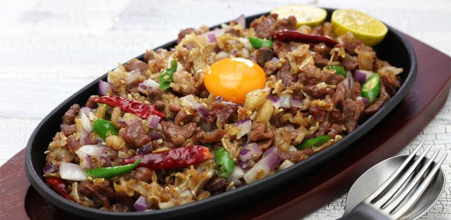
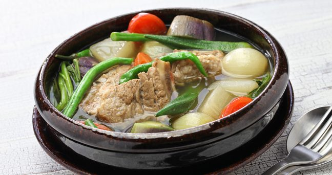
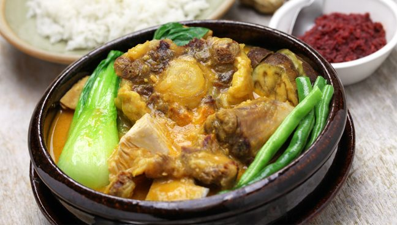
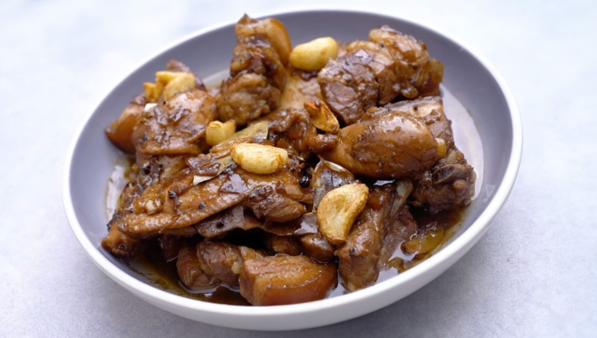
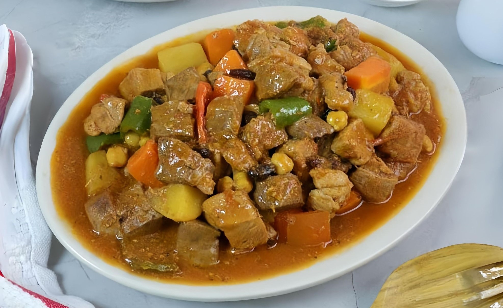
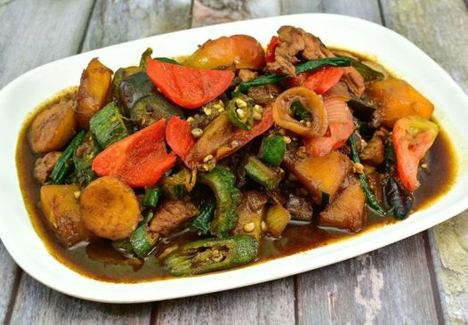

SISIG
Sizzling chopped pork cheeks, liver, and onions, seasoned with calamansi and chili peppers for a savory and spicy treat.

SINIGANG
A tangy tamarind-based soup with tender pork or shrimp, tomatoes, and fresh vegetables, served hot and flavorful.

KARE-KARE
Rich, peanut sauce-based stew with tender oxtail and tripe, paired with a medley of vegetables and served with shrimp paste.

ADOBO
A marinated pork or chicken simmered in soy sauce, vinegar, garlic, and bay leaves, served tender and savory.

MENUDO
Stewed pork and liver with potatoes, carrots, bell peppers, and raisins in a tomato-based sauce for a sweet and savory flavor.

PINAKBET
A vegetable dish cooked with bagoong, featuring okra, eggplant, bitter melon, and squash for a savory, earthy taste.